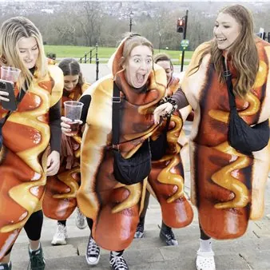

da lun 5 ott a sab 21 nov
Mostre fotografiche presso il Mercato Coperto
In occasione della 13a edizione del festival, Trieste Photo Days si conferma tra i protagonisti nella valorizzazione del Mercato Coperto, trasformandolo in un centro culturale dove l'arte si intreccia con la quotidianità dei cittadini. Questo spazio accoglie turisti e visitatori…
 Indicazioni
Indicazioni
- Costi e prenotazioni
- Costo non indicato · Prenotazione non indicata
- Programma
- Programma da verificare. Apri la fonte ufficiale per orari e possibili aggiornamenti.
- In caso di maltempo
- Nessuna indicazione specifica pubblicata.
- Note
- Acquisito automaticamente dalla fonte.
L’EVENTO
Descrizione completa
In occasione della 13a edizione del festival, Trieste Photo Days si conferma tra i protagonisti nella valorizzazione del Mercato Coperto, trasformandolo in un centro culturale dove l'arte si intreccia con la quotidianità dei cittadini. Questo spazio accoglie turisti e visitatori, invitandoli a esplorare un nodo vitale della vita cittadina, offrendo un'esperienza immersiva e coinvolgente.
Mostra "Fotografie Urbane: Trieste e le Città del Mondo" La grande mostra fotografica con oltre 500 fotografie, allestita a partire dalla settimana della Barcolana, raccoglie fotografie tratte da URBAN Photo Awards 2026 17a ed. che raccontano la quotidianità e le molteplici sfaccettature della vita urbana di tutto il mondo: storie di vita, persone, architetture, spazi pubblici, contrasti e trasformazioni delle città contemporanee. Un percorso attraverso immagini che, dal realismo alla dimensione più poetica e sorprendente, restituiscono la complessità e l’energia delle città del mondo.
Mostra "Spostare montagne: ritratti della femminilità contemporanea" di Marylise Vigneau
La mostra riunisce donne fotografate in geografie, contesti e condizioni di vita diverse, componendo un ritratto frammentato e insieme interconnesso della femminilità contemporanea. Danzatrici, volontarie, artiste, sopravvissute, lavoratrici, madri e testimoni del loro tempo: ogni immagine è un incontro tra l’esperienza individuale e le forze più ampie della storia, del conflitto, della memoria e della resilienza. Un lavoro che interroga come la femminilità contemporanea venga vista, vissuta e rappresentata.
Mostra "Heim" di Markus Born Progetto fotografico a lungo termine realizzato vivendo e viaggiando in Germania. La selezione proposta, diciannove fotografie in bianco e nero, è un estratto ragionato di un corpus più ampio, destinato anche a un progetto editoriale previsto per il 2027. Con un approccio che unisce rigore documentario e ricerca compositiva, Born lascia spazio al caso e costruisce un panorama associativo, cupo e attento, che tocca temi come la memoria storica, la migrazione e il rapporto con la natura. Il titolo stesso, “heim”, si ferma un passo prima di “Heimat” (patria, appartenenza), alludendo a un ritorno che non si compie mai del tutto.
Mostra "The Time Dreamed" di Umberto Verdoliva
Progetto che nasce dalla distanza tra il tempo vissuto e quello desiderato. Attraverso luoghi di passaggio, stanze provvisorie e notti illuminate da luci artificiali, l’autore cerca una forma di permanenza che la vita quotidiana non concede: affetti e gesti semplici non sono assenze, ma presenze fragili e intermittenti, che esistono pienamente solo quando riesce a fermarsi a guardarle davvero. Il paesaggio che scorre, i volti sfocati, le luci nella nebbia appartengono a un tempo incerto, sospeso tra realtà e immaginazione: non il tempo vissuto, ma quello desiderato, custodito, a volte solo sfiorato. Verdoliva porta avanti da anni un percorso di fotografia umanista ed è stato nominato autore dell’anno FIAF a Caorle nel 2023.
Mostra "Huellas" di Yinna Higuera
Progetto di grande sensibilità e originalità, capace di sviluppare una relazione poetica e materica tra fotografia, memoria e natura attraverso la stampa alla clorofilla su foglie naturali. La qualità del lavoro risiede nella sua dimensione fisica e organica: le opere non funzionano semplicemente come immagini, ma come oggetti vivi e fragili, strettamente legati al supporto naturale su cui vengono realizzati, una componente materiale centrale nella ricerca dell’artista e nella sua forza concettuale ed estetica. Orari di apertura: Lunedì: 08:00–14:00, martedì–sabato: 08:00–17:00 Domenica: chiuso. Ingresso libero.
IL PROGRAMMA
Programma e orari
Appuntamenti raccolti dalle fonti elencate. Dove manca un orario, non è ancora disponibile in questa scheda.
Programma pubblicato
- Dal 2026-10-05 al 2026-11-21
INFORMAZIONI UTILI
Prima di partire
- Controllare la fonte prima di partire.
ORGANIZZAZIONE